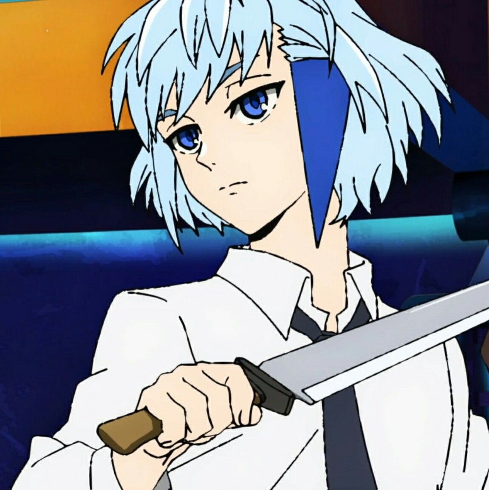

Sobre
Khun Aguero Agnis é um Regular Rank-C da Família Khun, e é frequentemente referido simplesmente como "Khun". Ele é o melhor amigo de Vigésimo Quinto Baam, um dos principais protagonistas de Tower of God. Ele é um dos muitos "filhos descartados" de Khun Eduan. Ele foi expulso da família porque sua irmã mais velha falhou em se tornar uma das Princesas de Zahard. Ele se uniu a Baam e Rak e passou vários testes com eles. Ele foi designado para a posição Portador de Luz e mostrou um talento claro em campo. Ele é um Regular altamente astuto, que manipula regras de testes para atender às suas necessidades.
Habilidades
Combate
Habilidades do Farol
Controle de Fluxo do Farol
Teletransporte do Farol
Barreira do Farol
Formação
Manipulação de Shinsu
Hobbies
Treinar com facas